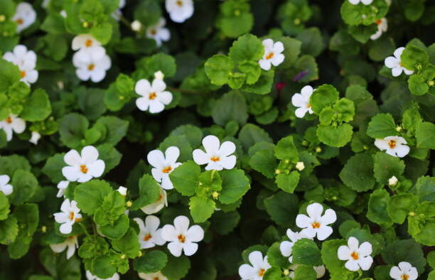

Indian Medicinal plants which are endangered

Indian medicinal plants are plants that have been traditionally used in Indian traditional
medicine systems like Ayurveda, Siddha, and Unani, as well as in other local traditional
healing practices. These plants are valued for their various therapeutic properties and
have been used for centuries to treat a wide range of health conditions.
Indian medicinal plants are often rich in bioactive compounds such as alkaloids,
flavonoids, terpenoids, and polyphenols, which contribute to their medicinal properties.
These plants are used to prepare remedies, herbal formulations, and dietary supplements
to promote health and well-being.
Ayurveda, one of the oldest holistic healing systems in the world, heavily relies on
Indian medicinal plants. Many of these plants are mentioned in ancient Ayurvedic texts
and are categorized based on their qualities and effects on the body's doshas (energetic forces).
Some well-known Indian medicinal plants include:
- Turmeric (Curcuma longa): Known for its anti-inflammatory and antioxidant properties.
- Neem (Azadirachta indica): Used for its antibacterial, antifungal, and skin-healing properties.
- Tulsi (Ocimum sanctum): Considered sacred and used for its immune-boosting and stress-relieving qualities.
- Amla (Emblica officinalis): Rich in vitamin C and used to enhance immunity and promote overall health.
- Ashwagandha (Withania somnifera): Adaptogenic herb known for its stress-reducing and energy-boosting properties.
Several Indian medicinal plants are endangered due to factors such as habitat destruction,
overharvesting, and climate change.In biology, the term "endangered" refers to a species
that is at risk of becoming extinctin the near future if appropriate conservation
measures are not taken. The International Union for Conservation of Nature (IUCN)
is a global authority that assesses the conservation status of various species
based on specific criteria. The IUCN Red List categorizes species into different
levels of threat, and "endangered" is one of these categories.
A species is classified as "endangered" when it meets certain criteria, which may include:
- A significant reduction in population size: The species has experienced a substantial decline
in its population size due to factors such as habitat loss, overharvesting, pollution, or disease.
- Limited distribution: The species has a restricted range, making it more vulnerable to
threats since it cannot easily adapt or migrate to new areas.
- Small population size: If the total number of individuals in a species becomes too small,
it can increase the risk of inbreeding, reduced genetic diversity, and vulnerability to
various ecological and environmental factors.
- Highly specialized habitat requirements: Species with specific habitat needs may be more
susceptible to extinction if their habitat is destroyed or altered.
- Significant decline in habitat quality: If the quality of the species' habitat degrades
to a critical point, it can threaten the species' survival.
- Vulnerability to predation, competition, or other factors: Some species might face
challenges from invasive species, predators, or other ecological factors that increase
their risk of extinction.
It's important to note that the "endangered" status is a serious concern, and efforts
are typically made to protect and conserve these species through habitat preservation,
regulation of trade, captive breeding, and other conservation strategies.
- Rauvolfia serpentina (Sarpagandha): Used in traditional medicine for treating high blood pressure and mental disorders.
- Taxus baccata (Himalayan Yew): Source of Taxol, a chemotherapy drug used to treat cancer.
- Aconitum heterophyllum (Ativisha): Employed in Ayurvedic medicine to treat fevers and digestive disorders.
- Nardostachys jatamansi (Jatamansi): Used for its calming and antidepressant properties in traditional medicine.
- Saussurea costus (Costus): Valued for its anti-inflammatory and digestive properties in traditional medicine.
- Podophyllum hexandrum (Himalayan Mayapple): Used for its laxative and antiviral properties.
- Picrorhiza kurroa (Kutki): Utilized in traditional medicine for liver disorders and immune system enhancement.
- Gentiana kurroo (Chirayata): Used for treating fever, liver disorders, and digestion-related issues.
- Dioscorea deltoidea (Lalapan): Employed in tribal medicine for various health issues.
- Phyllanthus spp. (Bhui Amla): Used for its hepatoprotective and antiviral properties.